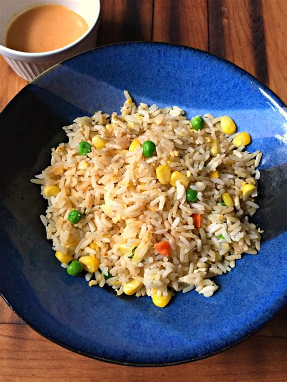

Fried Rice Recipe

Description
This is a recipe for fried rice that I'm making up now just to fill out the content of this exercise
- Servings: 2 people
- Prep Time: 10 minutes
- Cook Time: 5 minutes
Ingredients
- 2 cups of cooked rice, preferably 1 day old
- 4 cups of whatever vegetables you have in your fridge
- Soy sauce, to taste
- MSG, to taste
- Chilli sauce, to taste
Steps
- Chop vegetables into bite sized pieces
- Cook in heated wok until tender
- Add rice to wok and mix through vegetables
- Add sauce and seasonings to taste, continue to cook for 2-3 more minutes